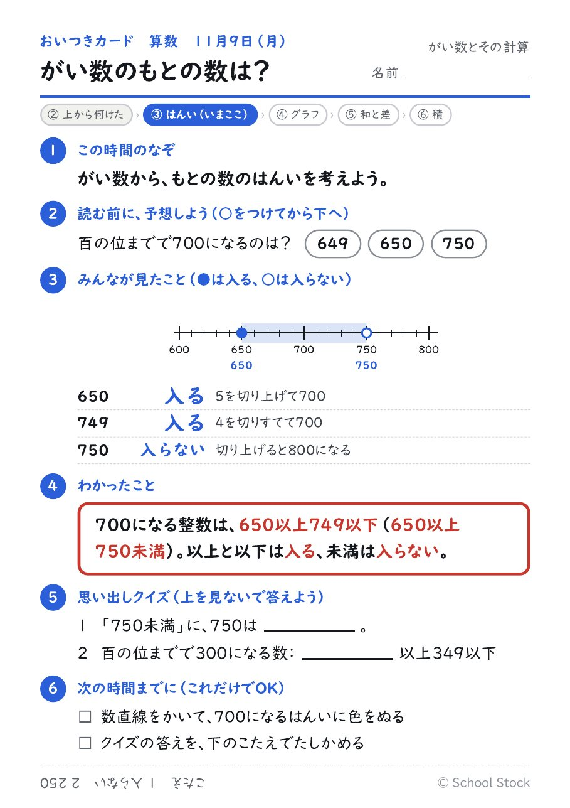
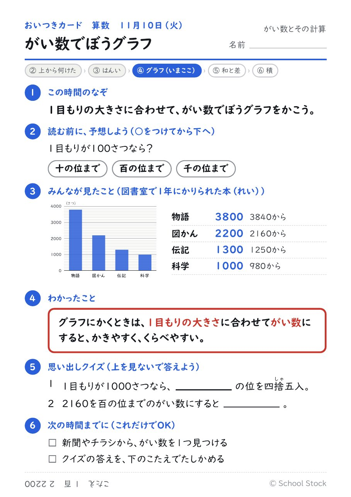
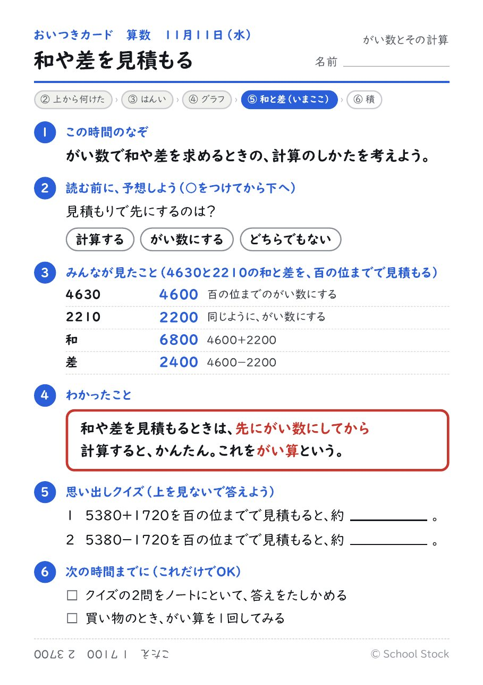
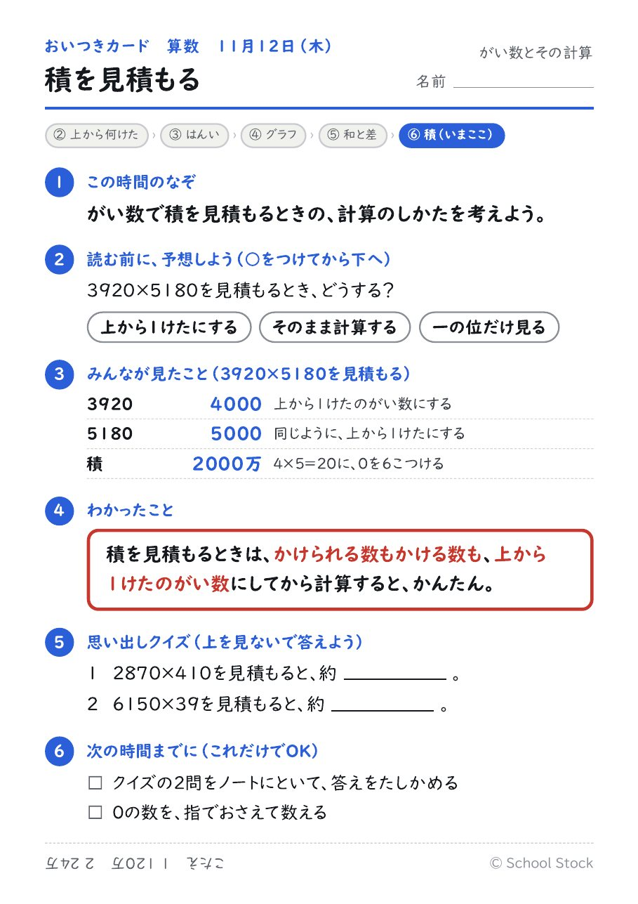
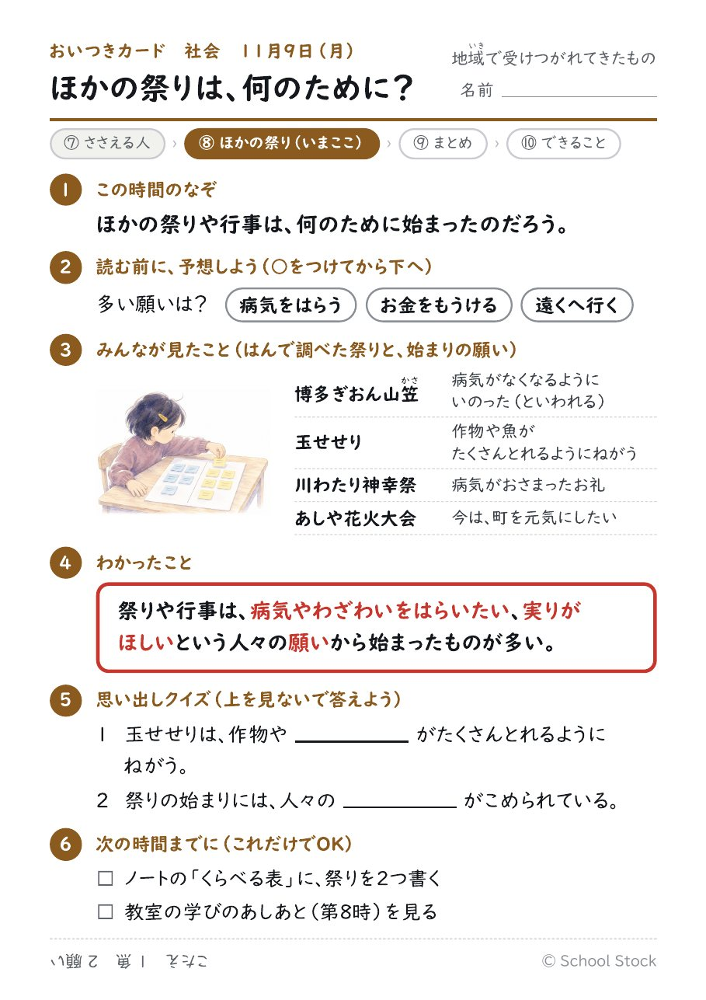
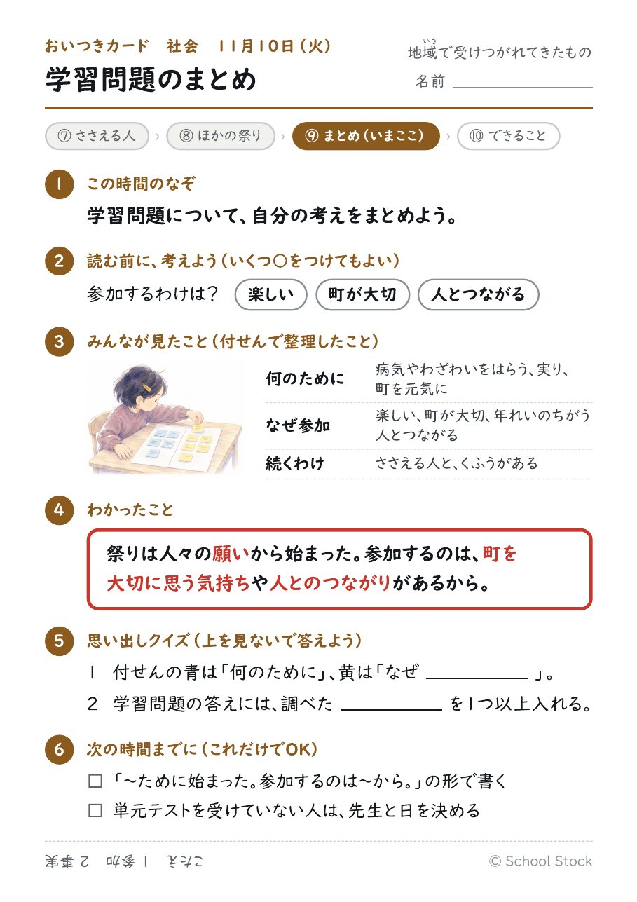
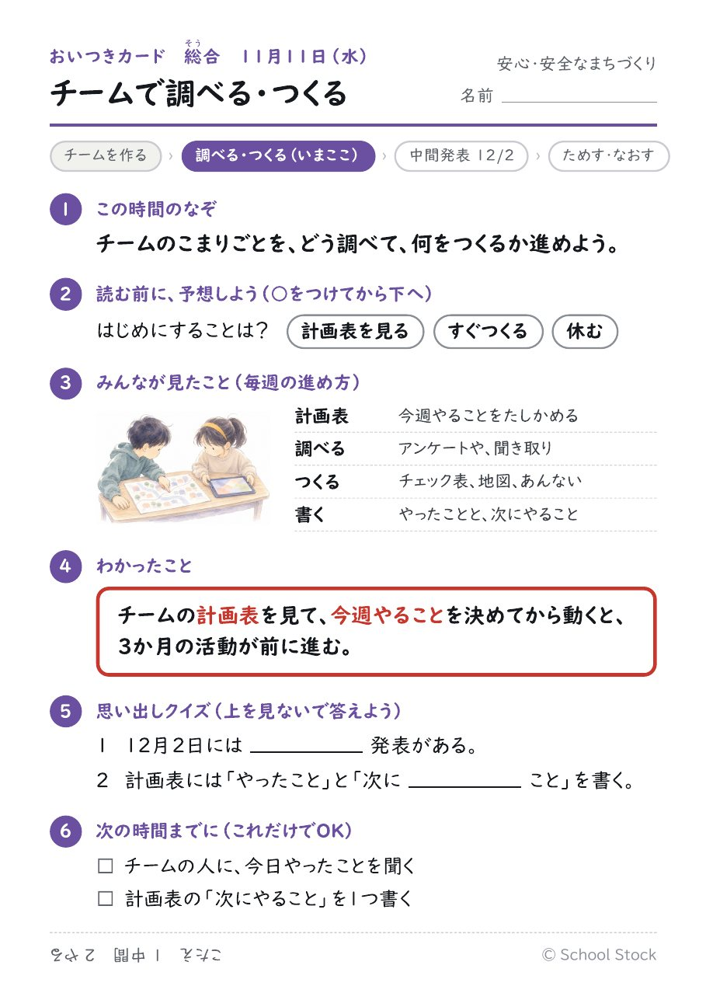

算数・社会・総合
今週の算数（がい数）、社会（地域で受けつがれてきたもの）、総合（安心・安全なまちづくり）の本時と、おいつきカードです。算数の板書とノートは教科書の問題が入っているので、ここには載せていません。
算数 11 がい数とその計算（全8時間）
11月9日（月）3校時 第3時 がい数の表すはんい
以上・未満・以下の意味を知り、がい数のもとの数のはんいを表す。
| 流れ | 中身 |
|---|---|
| はじめ（8分） | 「約500」の本当の数を予想させ、「500になる数はどこからどこまで？」と問う。 |
| 考える（25分） | 数直線で、500になる数に色をぬる。550は入るか。以上・未満・以下のことばを知る。 |
| まとめる（12分） | まとめ（2通りの言い方）。練習、○つけクイズ、ふりかえり。 |
評価 以上・未満・以下を使って、もとの数のはんいを表している（ノート）。
つまずきと手立て 550が入るかどうかで迷う。数直線に●と○をかいて区別させる。言葉の説明だけでは定着しない。
おいつきカードを見る

11月10日（火）3校時 第4時 がい数を使ってぼうグラフ
1目もりの大きさに合わせてがい数にし、ぼうグラフに表す。身の回りのがい数をさがす。
| 流れ | 中身 |
|---|---|
| はじめ（8分） | 表をそのままグラフにかけるかを問う。「1目もりの大きさなら、どの位までのがい数にする？」 |
| 考える（25分） | 一万の位までのがい数にしてぼうグラフをかく。がい数にしてよかったことを話し合う。 |
| まとめる（12分） | まとめ。身の回りのがい数さがし（ニュース、チラシ、山の高さ）。 |
評価 1目もりの大きさに合わせてがい数にし、グラフに表している（ノート）。
つまずきと手立て 四捨五入する位を、1目もりの大きさから決められない。「1目もりより1つ下の位を見る」と言葉にさせる。
おいつきカードを見る

11月11日（水）3校時 第5時 和や差の見積もり
和や差をがい数で求めるときは、先にがい数にしてから計算すればよいことに気づく。
| 流れ | 中身 |
|---|---|
| はじめ（8分） | 「あわせた数は約何百何十万？」と問い、めあてを立てる。 |
| 考える（25分） | 「計算してからがい数」と「がい数にしてから計算」の2つの考えをくらべる。どちらが楽か。 |
| まとめる（12分） | まとめと「がい算」のことば。練習。 |
評価 和や差を、先にがい数にしてから見積もっている（ノート・練習）。
つまずきと手立て 細かく計算してからがい数にしてしまう。答えが同じになることを確かめてから、楽なほうを選ばせる。
おいつきカードを見る

11月12日（木）3校時 第6時 積の見積もり
かけられる数もかける数も上から1けたのがい数にしてから計算すると、積をかんたんに見積もれることに気づく。
| 流れ | 中身 |
|---|---|
| はじめ（8分） | 「売り上げは約何万円？」と問い、筆算はたいへんだから、がい数にすればよいことに気づかせる。「どの位までのがい数にする？」 |
| 考える（25分） | 上から1けたのがい数にしてかける。0が多くてまちがえそうなので、0をのぞいてかけてから、0の数をつける。電卓でくわしく計算し、ほぼ同じことを確かめる。 |
| まとめる（12分） | まとめ「かけられる数もかける数も、上から1けたのがい数にしてから計算する」。練習とふりかえり。 |
評価 かけられる数とかける数を上から1けたのがい数にして、積を見積もっている（ノート・練習）。
つまずきと手立て 0の数をまちがえる。0をのぞいた数をかけてから、0がいくつあるかを指でおさえて数えさせる。
おいつきカードを見る

社会 地域で受けつがれてきたもの（全10時間）
11月9日（月）2校時 第8時 ほかの祭りや行事の始まり
ほかの祭りや行事の始まりを班で調べて表にまとめ、祭りや行事には人々の願いがこめられていることを考える。
| 流れ | 中身 |
|---|---|
| つかむ（5分） | 飯塚山笠の始まりの願いをふり返る。「ほかの祭りも同じでしょうか」でめあてを立てる。 |
| 調べる（17分） | 4つの班で、博多祇園山笠、玉せせり、川渡り神幸祭、あしや花火大会の資料を読み、くらべる表の1行をうめる。分からないことは「分からなかった」と書く。 |
| くらべる（15分） | 班の表を黒板の大きな表に集め、共通点を見つける。「病気や災いをはらう」「実り」「町を元気に」の3つの見出しでまとめる。 |
| まとめる（8分） | まとめとふりかえり。英彦山神宮の家庭学習カードを配る（調べなくてもよい）。 |
評価 2つ以上の祭りをくらべて、共通する願いを書いている（思考・判断・表現。ノート）。
つまずきと手立て 言い伝えを事実として書く。「〜といわれる」と書くことを、資料を読む前に伝える。
おいつきカードを見る

11月10日（火）4校時 第9時 学習問題のまとめと単元テスト
調べたことを「何のために」と「なぜ参加するのか」の2つに整理し、学習問題に対する自分の考えをまとめる。
| 流れ | 中身 |
|---|---|
| 整理する（10分） | 学びの足跡を順に指しながら、「何のために」と「なぜ参加するのか」の2列を口頭で整理する。付せんは青と黄の2色。 |
| 書く（5分） | 学習問題の答えを、2つを両方入れて1〜2文で書く。 |
| 単元テスト（30分） | 単元テストを行う。答えの文はテストのあとに回収してもよい。 |
評価 答えの文に、調べた事実が1つ以上入っている（思考・判断・表現。ノート）。
つまずきと手立て 書き出しが決まらない。「祭りや行事は〜ために始まった。みんなが参加するのは〜からだと思う。」の形を示す。
おいつきカードを見る

総合 安心・安全なまちづくり（3か月プロジェクト）
11月11日（水）4・5校時 調べる・つくる（2時間） チームで調べる・つくる
チームの計画表をもとに、自分たちの困りごとについて調べたり、つくったりして、次にやることを決める。
| 流れ | 中身 |
|---|---|
| はじめ（4校時の10分） | チームごとに計画表を開き、今日の2時間でやることを2つ決める。12/2の中間発表までの残りを確かめる。 |
| 調べる・つくる（4校時35分＋5校時30分） | アンケートの用意、聞き取りの準備、チェック表や地図の試作など、チームの計画どおりに進める。途中で1回、チームの間で見せ合う。 |
| 記録する（5校時の15分） | 計画表に「やったこと」と「次にやること」を書く。先生は各チームの計画表を見て、一言コメントを返す。 |
評価 計画表に、毎週の書き込みが続いている（主体的に学習に取り組む態度）。
つまずきと手立て チームで話が止まる。計画表の「次にやること」を1つだけ読み上げてから動かす。
おいつきカードを見る
